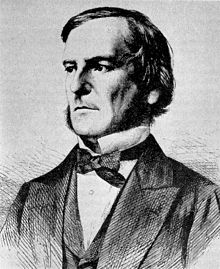

Né le 2 novembre 1815, George Boole était un mathématicien, logicien, philosophe et informaticien britannique du 19e siècle ayant notamment découvert les invariants algébriques, étant l'une de ses plus grandes découvertes.Il écrira par ailleurs plusieurs articles (dont l'un recevra la médaille royale), des traités mais ainsi que de plusieurs livres, par exemple : "Mathematical Analysis of Logic", sorti en 1847, ou encore "An Investigation Into the Laws of Thought, on Which are Founded the Mathematical Theories of Logic and Probabilities", sorti lui en 1854, parlant tous deux de mathématiques et de la logique. Seulement, manquant d'argent, il sera contraint de renoncer à reprendre les études à l'université de Cambridge à 30 ans, et devra alors se tourner vers l'enseignement et deviendra alors professeur de mathématiques au Queen's College de Cork jusqu'à la fin de sa vie.George Boole est connu pour avoir découvert une nouvelle forme de logique, à la fois symbolique et mathématique, qui est présente dans notre vie quotidienne à travers d'objets électroniques.En 1857, il est nommé membre de la Royal Society, qui est une société de savants londoniens et décèdera dans de malheureuses circonstances le 8 décembre 1864.
"An Investigation Into the Laws of Thought" écrit en 1854, est l'un de ses travaux majeurs, dans lequel,l'idée essentielle de cet ouvrage est de démontrer que les raisonnements logiques sont déterminés par des principes mathématiques similaires à ceux de l'algèbre. De ce fait, ils peuvent être représentés et analysés à l'aide d'équations mathématiques, grâce à un nouveau type de calcul qui ne s'applique pas aux nombres, mais aux classes d'objets.L'objectif est de transformer des idées et des concepts en équations, leur appliquer certaines lois et retraduire le résultat en termes logiques. Pour cela, il crée une algèbre binaire, dite booléenne, n'acceptant que deux valeurs numériques : 0 et 1.Les travaux de Boole, bien que théoriques à la base, ont des applications essentielles dans de nombreux domaines, notamment les systèmes informatiques, la théorie des probabilités, les circuits téléphoniques, hydrauliques et pneumatiques, et bien d'autres, grâce aussi à des scientifiques du 19e siècle.En d'autres termes, les idées de Boole ont eu un impact durable sur la logique, l'informatique et la philosophie moderne.